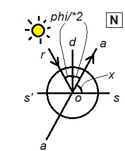

| Tedesco | Italiano |
|---|---|
| 1) Bei vielen optischen Versuchen muss man durch eine kleine Oeffnung im Laden eines dunkeln Zimmers ein Bündel Sonnenstrahlen einfallen lassen. Damit die einfallenden Strahlen eine passende Richtung haben , lässt man sie aber nicht direct eintreten, sondern man bringt vor dem Laden einen ebenen Spiegel an, welcher die Sonnenstrahlen in passender Richtung durch die kleine Oeffnung in das Zimmer reflectirt. Nun aber ändert sich der Stand der Sonne fortwährend, und eine Folge davon ist, dass auch die Richtung der ins Zimmer reflectirten Strahlen sich ändert, wenn der Spiegel fest stehen bleibt. | 1) In molti esperimenti ottici è necessario far penetrare un fascio di raggi solari attraverso una piccola apertura in una stanza buia. Affinché i raggi incidenti abbiano una direzione adeguata, non vengono fatti entrare direttamente, ma viene posizionato davanti alla stanza uno specchio piano che riflette i raggi solari nella direzione desiderata attraverso la piccola apertura nella stanza. Tuttavia, la posizione del sole cambia continuamente, e ciò comporta anche un cambiamento nella direzione dei raggi riflessi nella stanza quando lo specchio rimane fisso. |
| 2) Will man die Richtung der in das Zimmer reflectirten Strahlen unverändert erhalten, so muss also der Spiegel in einer der Bewegung der Sonne entsprechenden Weise gedreht werden, und jede Vorrichtung, durch welche dies ausgeführt wird, wird ein Heliostat genannt. | 2) Per mantenere invariata la direzione dei raggi riflessi nella stanza, lo specchio deve essere ruotato in modo corrispondente al movimento del sole. Ogni dispositivo che esegue questa operazione è chiamato eliostato. |
| 3) Bei den einfachen Heliostaten, wie sie in der Regel an Sonnenmikroskopen angebracht werden, geschieht die Drehung des Spiegels durch die Hand. Zunächst kann der Winkel geändert werden, welchen der Spiegel mit der Ebene des Fensterladens macht ; dann aber ist der Spiegel noch um eine zur Ebene des Fensterladens rechtwinklige Axe drehbar. Diese beiden Drehungen werden vermittelst zweier an der inneren Seite des Ladens angebrachter Schraubenköpfe ausgeführt, und man ist dadurch im Stande, den Spiegel stets so zu stellen, dass die von ihm reflectirten Sonnenstrahlen in horizontaler Richtung rechtwinklig zur Ebene des Fensterladens eintreten. | 3) Nei semplici eliostati, come quelli di solito installati su microscopi solari, la rotazione dello specchio avviene manualmente. Inizialmente, l'angolo tra lo specchio e il piano della persiana può essere modificato; successivamente, lo specchio è ruotabile attorno a un asse perpendicolare al piano della persiana (link). Questi due movimenti sono eseguiti tramite due teste di vite montate sul lato interno della persiana, consentendo di posizionare lo specchio in modo che i raggi solari riflessi da esso entrino nella stanza in direzione orizzontale perpendicolare al piano della persiana. |
| 4) Den Spiegel beständig durch Drehen mit der Hand in richtiger Stellung zu erhalten, ist nicht allein lästig, sondern bei vielen Versuchen auch sehr störend; man hat deshalb Heliostate construirt. | 4) Mantenere costantemente lo specchio in posizione corretta ruotandolo manualmente non solo è fastidioso, ma è anche molto disturbo in molti esperimenti; pertanto, sono stati progettati eliostati in cui la rotazione dello specchio è gestita da un meccanismo a orologeria. |
| 5) Einer der übersichtlichsten hierher gehörigen Apparate ist das von Meyerstein construirte Heliostat, welches in Fig. 583 ungefähr in 1/8 der natürlichen Größe abgebildet ist. Das Instrument wird so aufgestellt, dass die Axe aa der Weltaxe parallel steht. | 5) Uno degli apparecchi più chiari in questo contesto è l'eliostato costruito da Meyerstein, che è approssimativamente rappresentato in figura 583 a circa 1/3 della dimensione naturale. Lo strumento viene posizionato in modo che l'asse aa sia parallelo all'asse del mondo. |
| 6) Nahe am unteren Ende ist an der Axe aa ein gezahntes Rad befestigt, welches durch das Uhrwerk cc in 24 Stunden einmal um seine Axe umgedreht wird, so dass also die Axe aa in jeder Stunde eine Drehung von 15° erleidet. | 6) Vicino alla parte inferiore, sull'asse aa, è fissata una ruota dentata che, grazie all'orologio cc, compie una rotazione completa intorno al suo asse in 24 ore, in modo che l'asse aa subisca una rotazione di 15° ogni ora. |
| 7) Eine auf das obere Ende der Axe aa aufgeschobene und mittelst einer Stellschraube fest zu klemmende Messinghülse endet oben mit einer halbkreisförmigen Gabel, zwischen deren Enden der ebene Spiegel SS so angebracht ist, dass er um eine rechtwinklig zu aa stehende Axe gedreht, und in jeder beliebigen Neigung gegen aa festgestellt werden kann. | 7) Un manicotto di ottone, fissato all'estremità superiore dell'asse aa e bloccato saldamente mediante una vite di regolazione, termina in alto con una forcella semicircolare, tra le cui estremità è posizionato lo specchio piano SS. Lo specchio può essere ruotato attorno a un asse perpendicolare ad aa e può essere fissato in qualsiasi inclinazione rispetto ad aa mediante una vite di regolazione. |
| 8) Der Spiegel s's wird nun so gestellt, dass der einfallende Strahl ro nach op, der Verlängerung der Axe aa, refleetirt wird, dass also der reflectirte Strahl, in die Richtung der Weltaxe fallend, gegen den Nordpol des Himmels gerichtet ist. | 8) Lo specchio s's viene quindi posizionato in modo che il raggio incidente ro sia riflesso nella direzione della linea aa prolungata, in modo che il raggio riflesso, cadendo nella direzione dell'asse del mondo, sia rivolto verso il Polo Nord celeste.  |
| 9) Wird nun bei unveränderter Neigung des Spiegels SS gegen die Weltaxe die derselben parallele Axe aa durch das Uhrwerk mit derselben Winkelgeschwindigkeit gedreht, mit welcher die Sonne sich um die Weltaxe bewegt, so ist leicht zu übersehen, dass der reflectirte Strahl stets mit op, der Richtung der Weltaxe, zusammenfallen muss. | 9) Se, mantenendo costante l'inclinazione dello specchio SS rispetto all'asse del mondo, l'asse aa parallelo ad esso viene ruotato dall'orologio con la stessa velocità angolare con cui il sole si muove intorno all'asse del mondo, è facile vedere che il raggio riflesso deve sempre coincidere con op, la direzione dell'asse del mondo. |
| 10) Wie gross die Neigung der Spiegelebene gegen die Weltaxe sein müsse, ergiebt sich aus folgender Betrachtung: | 10) L'entità dell'inclinazione del piano dello specchio rispetto all'asse del mondo può essere determinata dalla seguente considerazione: |
| 11) Es sei ap , Fig. 584, die Richtung der Weltaxe, o der Mittelpunkt des Spiegels, ro der einfallende Strahl. Die Poldistanz der Sonne, also den Winkel rop wollen wir mit phi bezeichnen. Soll nun der Strahl ro nach op reflectirt werden, so muss das Einfallsloth od den Winkel rop halbiren, der Winkel dop muss 1/2 phi sein. | 11) Supponiamo che ap sia la direzione dell'asse del mondo, o il punto medio dello specchio, ro il raggio incidente. Vogliamo indicare con phi l'angolo rop, la distanza polare del sole. Per riflettere il raggio ro verso op, l'asse incidente od deve dimezzare l'angolo rop, ossia l'angolo dop deve essere 1/2 phi. |
| 12) Da ferner die Spiegelebene s's rechtwinklig auf od stehen, der Winkel dos also 90° sein muss , so ergiebt sich für den Winkel x, welchen die Spiegelebene os mit der Weltaxe op macht , der Werth x =90° — 1/2phi | 12) Poiché il piano dello specchio s's è perpendicolare ad od, l'angolo dos deve essere di 90 gradi, quindi il valore dell'angolo x, che il piano dello specchio os forma con l'asse del mondo op, è x = 90 gradi - 1/2phi. |
| 13) Wäre z. B. für einen bestimmten Tag die nördliche Declination der Sonne gleich 20°, so wäre phi = 90° — 20° = 70°, also x = 55°. An einem Tage, an welchem die Sonne 20° südlich vom Aequator steht, ist phi = 110°, an diesem Tage ist also der Spiegel so zu stellen, dass x = 35°. | 13) Se, ad esempio, per un determinato giorno la declinazione settentrionale del sole fosse pari a 20°, allora phi = 90° — 20° = 70°, quindi x = 55°. In un giorno in cui il sole si trova a 20° a sud dell'equatore, phi = 110°, quindi in quel giorno lo specchio deve essere posizionato in modo che x = 35°.  |
| 13b) Zur richtigen Einstellung des Spiegels dient der getheilte Kreis kk, Fig. 583, über welchem sich parallel mit der Spiegelebene ein Zeiger bewegt, der auf Null steht, wenn die Spiegelebene mit der Weltaxe zusammenfallt, wenn also der Winkel pos gleich Null ist. | 13b) Per la corretta regolazione dello specchio, serve il cerchio diviso kk, Fig. 583, sopra il quale si muove, parallelamente al piano dello specchio, un indicatore che è a zero quando il piano dello specchio coincide con l'asse del mondo, quindi quando l'angolo pos è uguale a zero. |
| 14) Bei richtiger Einstellung liefert also dieses Instrument einen reflectirten Strahl, welcher, während die Sonne ihre tägliche Bewegung fortsetzt, doch unverändert die Richtung der Weltaxe beibehält. Diese Richtung des reflectirten Strahles ist aber für die meisten Versuche höchst unbequem, und es bedarf eines *zweiten Spiegels*, um den in der Richtung der Weltaxe aufwärts sich fortpflanzenden Strahl in horizontaler Richtung ins verfinsterte Zimmer zu reflectiren. | 14) Con una corretta regolazione, questo strumento fornisce un raggio riflesso che, mentre il sole continua il suo movimento quotidiano, mantiene invariata la direzione dell'asse del mondo. Tuttavia, questa direzione del raggio riflesso è estremamente scomoda per la maggior parte degli esperimenti, e è necessario un secondo specchio per riflettere il raggio che si propaga in direzione dell'asse del mondo verso l'alto in direzione orizzontale nella stanza oscurata. |
| 15) Einmal richtig eingestellt, behält dieser zweite Spiegel seine Stellung unverändert bei. Beide Spiegel sollten, wenigstens zu genaueren Versuchen, Metallspiegel sein. | 15) Una volta regolato correttamente, questo secondo specchio mantiene la sua posizione invariata. Entrambi gli specchi dovrebbero essere, almeno per esperimenti più precisi, di specchio metallico. |
| 16) Das oben beschriebene Meyerstein'sehe Heliostat ist eigentlich nur eine vereinfachte Form des Fahrenheit'sehen , dessen sich auch Fraunhofer bediente. Beim Fahrenheit'schen Heliostat sind beide Spiegel auf demselben Stativ angebracht, während bei der Meyerstein'schen Vorrichtung der zweite Spiegel ein von dem eigentlichen Heliostat, Fig. 583, ganz getrenntes Stück bildet. | 16) L'Heliostat di Meyerstein descritto sopra è in realtà solo una forma semplificata di quello di Fahrenheit, che è stato utilizzato anche da Fraunhofer. Nell'Heliostat di Fahrenheit, entrambi gli specchi sono montati sulla stessa base, mentre nel dispositivo di Meyerstein, il secondo specchio costituisce una parte completamente separata dall'Heliostat principale, Fig. 583. |
| 17) Da bei jeder Reflexion Licht verloren geht , so war man schon frühe bemüht, Uhrheliostate mit einem Spiegel zu construiren. Der erste derartige Apparat rührt von S'Gravesande her. Später haben Gambey, Silbermann u. A. einspiegelige Uhrwerk- Heliostate construirt. | 17) Poiché con ogni riflessione si perde luce, si è cercato fin dall'inizio di costruire eliostati con orologio dotati di uno specchio. Il primo apparato di questo tipo è attribuito a S'Gravesande. Successivamente, Gambey, Silbermann e altri hanno costruito eliostati con orologio a specchio singolo. |